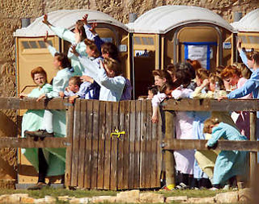

The news was simply too good to hide under a bushel.
Arrow Child and Family Ministries, a foster care and adoption agency with headquarters near Houston, "found out today that they will be receiving 80-100 permanent placement children," exulted the sister of an assistant to Mark A. Tennant, founder and head of the agency. "More than likely, the parental rights of their parents will eventually be terminated and they will be placed in foster homes and/or adopted out."
That letter was set adrift in the blogosphere (scroll down to comment number 71 et. seq.) sometime around April 22-23 -- that is, at approximately the same time that Judge Barbara Walther issued a "placement order" that resulted in hundreds of children being torn away from their mothers and sent away in buses.
Walther has a lot to answer for, beginning with the fact that she didn't compel the State to produce the anonymous "victim" whose call produced the original search warrant for the YFZ Ranch. It's also quite likely that she was aware of the fact that "Sarah" didn't exist, and that the original call was a demented hoax, at the time Walther issued the original search warrant; she had to have known as much when she issued the April 22 "placement order."
So it's clear that Walther, like most people who wear the habiliments of the judicial profession, is guilty of serious crimes against the Constitution. But she hasn't yet issued an order to "terminate" the parental rights of the FLDS mothers. The obvious import of the letter cited above is that this development is a foregone conclusion, since provisions have already been made for long-term custodial care for the abducted children by Arrow and other foster care/adoption agencies.
"These children will be in a wonderful Christian environment," gushes the author of that letter, who goes on to explain that the Arrow Center was in need of volunteers to help clean the facility and perform other routine tasks "over the next couple of years." Furthermore, "it looks like CPS [Child "Protective" Services] is coordinating with the University of Texas to have a charter school on site at the retreat center. This will take place in the fall. Therefore: Arrow will have to build several new buildings for the school."
Immediately after the children had been removed from YFZ, the Arrow Center "sent a staff of 15 over a two week period to assist the Department [of Family and Protective Services] and other providers on the ground in San Angelo to help with activities and supervision of the children and families from the compound."
How thoughtful of them.
Mental health workers assigned to help CPS have testified that the conditions for FLDS children and mothers in state custody were akin to those of Nazi "concentration camps." So the role played by the good Christian people from the Arrow Center was to help with "activities." You know, sort of like organizing games of Red Rover and Ring-around-the-Rosy at Ravensbruck.
Obviously, a great deal of planning and preparation went into all of this. The initial raid on YFZ Ranch took place on April 3; within less than a week, Houston's NBC affiliate KVUE reported that Arrow's staff was preparing to receive scores of children.
"The Arrow Retreat Center was built to be just that -- a retreat center," reported KVUE. "But after Hurricane Katrina, they turned it into a shelter. Now that, once again, hundreds of children are being forced from their homes in West Texas, the center could be used to house them."
Rex and Patricia Childress, foster parents of five boys, were presented by KVUE as potential foster parents for girls ripped from their home at YFZ Ranch.
"You've got to show [the children] that people do care about them, and that there are people out here that are willing to help," Rex Childress explained.
The typical passive consumer of the officially sanctioned lies we call "news" was thus invited to perceive the scores of children taken from their mothers as victims of some tragic caprice of inscrutable nature, rather than the victims of armed abduction by a state-sanctioned criminal syndicate called the CPS.
There's no evidence at all that the children of YFZ Ranch had been abused or neglected in any way, or that they had been deprived of affection from the people who mattered the most to them. And now that those kind, caring, self-described Christian people have "helped" them by terrorizing them at gunpoint and breaking up their families, at least some of these children will be left hurting, confused, and probably susceptible to whatever mind-rape the CPS sees fit to inflict on them in the course of creating "evidence" to justify this entire abominable enterprise.
After being silent about the matter for a month -- he was busy; it takes time to find the right shade of Just For Men to keep one's youthful thatch of hair a preternatural chestnut brown -- Texas Governor Rick Perry finally commented about the El Dorado affair. By way of an intermediary, Perry defended the honor, such as it is, of the CPS and promised a full investigation of the allegations of CPS mistreatment at San Angelo. That investigation of the CPS will be conducted by the CPS, of course.

"The Governor is very proud of the work being done by CPS," Perry said via spokeswoman Krista Piferrer. "CPS has handled a very complex situation both professionally and compassionately. " Perry also "applauded" the CPS for promising an "internal" inquiry into the charges, which amounts to the Governor granting the agency plenary authority to conduct a cover-up.
This is the same Governor Perry, of course, who has presided over a foster care system rife with abuse -- including murder and the sexual molestation of children as young as three years of age. It is the same Governor Perry who promised a "top-to-bottom review" of the Texas Youth Commission (TYC) following revelations of widespread physical and sexual abuse of teenage detainees by guards, staff, and other inmates within that juvenile correctional system. In the year that's passed since the TYC scandal went public, the agency has been through five chief administrators without seeing any serious improvement.
Given the near-ubiquity of criminal violence and abuse directed at children in Rick Perry's Texas, I'm starting to wonder if the YFZ Ranch was the only place in the state where children were safe from such treatment.
So far there is no evidence that anyone living there was ever mistreated in any way. And since the only witnesses to any alleged abuse are going to be in the custody of an agency with every reason to taint their testimony, it's difficult to see how any abuse allegation could be free of reasonable doubt. But with the children securely in their possession, the CPS can either manufacture the needed "evidence" after the fact, or simply hold on to the children while legal proceedings grind on interminably.


Uh-oh: FLDS women under CPS detention are seen waving at friends and family members, a gesture they were told was forbidden to them.Like the war on Iraq, the war waged by Texas on the women and children of the FLDS community may turn out to be an immaculate deception.
Everybody knows that the reasons behind it are utterly spurious, and that innocent people are suffering needlessly, but nobody is willing to do what is necessary to end it and punish those responsible. So people just pretend as if the truth is either infinitely malleable, or entirely inconsequential.
And we can see good Christian people playing roles similar to those they've essayed where the war in Iraq is concerned. Christians have been enablers, facilitators, and supporters of official crimes, eager consumers and diligent regurgitators of official propaganda, sanctimonious sanctifiers of the State's criminal aggression, and pious profiteers when presented with the opportunity.
If those who profess to worship Jesus can't become principled opponents of the lawless Regime ruling us, the very least they should do is stop volunteering to be the ice cream every time the State feeds us a helping of cowpie ala mode.
Update: The Ice Cream's All Gone...
... and this is what's underneath:
"Abandoning their religion and husbands may be the only way that FLDS mothers will be reunited with their children," reports Rod Decker of Salt Lake City's KUTV news. "Texas officials issued new rules Thursday that dictate what the mothers will have to do before the state will return the 464 children. The plan says that the mothers will have to prove that they have provided the children with `a home free of persons who have, or will abuse the children.'"
Does the State of Texas now have a fully functioning Department of Pre-Crime? Or does it merely expect the mothers to exercise some form of precognitive gifts?
Neither is the case, of course. As Decker surmises, the People's Republic of Texas is demanding nothing less than a full and unconditional repudiation of the FLDS religion by the mothers, and the rat bastards are using their children as blackmail leverage to extract this concession.
"To hammer their point even harder," continues Decker, "Texas officials told FLDS communities that if they don't cooperate, the court could `terminate parental rights' and `appoint a conservator with authority to consent to each child's adoption.'"
None of this will come as a surprise to the supernally sweet Christian folks at Arrow Child and Family Ministries, who were advised weeks in advance of Judge Walther's April 22 "placement order" that FLDS members would have their parental rights terminated.
Among the nastiest things former FLDS leader Warren Jeffs did to rebellious members of the sect was to "reassign" their wives and children to more faithful members. He did this with the help of a state-sanctioned police force.
How, exactly, does this differ from what the State of Texas is now threatening to do to the FLDS mothers?
And of course, the most effective way for the FLDS mothers to ensure an abuse-free environment for their children would be to keep them out of the hands of the State of Texas by whatever means necessary.
It bears repeating that all of this is being done without so much as a particle of evidence that abuse has ever been committed by anyone at the YFZ Ranch. From the beginning, this entire undertaking has been carried out without probable cause, and in defiance of every principle of due process known to the Anglo-Saxon tradition of liberty under law.
It's not just that the CPS has delivered this ultimatum without bothering to prove its case; that ultimatum has been issued without the CPS even bothering to make a case of any kind. This is straight-up mass child abduction and extortion devoid of even the pretense of legal authority. And if the perps are successful, the atrocity in El Dorado will be just the beginning of sorrows.
 Available now!
Available now!Dum spiro, pugno!
40 comments:
Any American who wonders why our ancestors practiced and tolerated slavery should ponder this mass kidnapping, and its acceptance and endorsement by professing Christians. Man stealing was, and is becoming again with awful rapidity, a kind of "sanctified sin", an evil which is called good.
What does the Old Testament say? "Even the tender mercies of the wicked are cruel."
Do I not have the facts straight? Were not some of the FDLS mothers minors under the age of 16, thus constituting instances of statutory rape?
Mr. Grigg - I imagine this case is a difficult one for a christian libertarian such as yourself to grapple with because some intervention by authorities seems appropriate to ascertain if basic laws have been violated, but this is made difficult due to the isolated nature of the FDLS and the fact that FDLS members seem to "circle the wagons".
I am in no way excusing the excesses of the CPS, and am not a proponent of the seperation of the children from their mothers; either temporarily or permanently.
Mr. Grigg, please clarify what intervention you would deem appropriate.
To change the subject - I am in the process of reading all your archives in chronological order to get up to speed. I find you to be highly informative and really enjoy your writing style.
I keep dictionary.com handy when reading your stuff, but this is a good thing, right? They have been butchering the english language for decades, particularly in the removal of words that voice political dissent.
Of course gov Perry is proud of the CPS. They've just pulled a 450x double-dip.
I've posted before about how the support orders have already gone out (but they are sealed and you will never see them). So the parents are forced to pay and the state then get to turn around and collect a similar amount from the federal trough. Unlike most family court cases resulting from divorce the state gets to collect all of the proceeds from both sides in this instance. It is ALWAYS about the money, never about the kids.
There is only one solution - the family courts must be abolished. Either from above by legislation (fat chance, it's a cash cow) or from below by - shall we say, ahem - an attrition rate that is not sustainable. For the readers, think creatively about that last sentence - I'm sure you will figure it out.
Regarding you next to last paragraph, I'd like to make one comment. Though I experienced the attacks of some of your readers for my atheism, what you have described is exactly the conclusion I came to in my teens. Ism's are bad juju . . .
cycletimechart -- Thanks so much for the kind comments about my blog. And you're entirely right in saying that this case presents some distinctive difficulties owing to the nature of the FLDS sect/cult.
If specific evidence is found of a "marriage" between an adult male and a female under the age of 16, we would have oneprosecutable offense under Texas law. And this would be true for every similar instance, assuming that any are found.
That's the only acceptable way to proceed, as opposed to the tortured sophistry peddled by the CPS in which the entire community is treated as a single household for the purposes of the law -- thereby inculpating everybody in the presumed crimes of any individual.
My study of this whole issue leaves me with the impression that the FLDS in Texas were very careful to comply with state laws, so I'm doubtful that we'd find a huge, thriving conspiracy to commit statutory rape at YFZ Ranch.
As was the case with the early Mormon Church, FLDS members follow a system of "theocratic ethics" (that's historian D. Michael Quinn's expression) in which it's acceptable in some situations to "lie for the Lord" -- in practice, to lie on behalf of their church leaders. So this does complicate things a little bit in trying to assess what happened in El Dorado.
But since the state can't make a solid criminal case, the only acceptable outcome is the return of the children to all of the mothers and a round of firings, professional sanctions, and lawsuits against the people responsible for this mess.
At least, that's how I see it.
Cycle, take a breath, ask yourself. is it possible for a 14, a 15 or a 16 year old to be pregnant, in Texas, without a violation of law? When you can answer that question accurately you will understand that a pregnant underage teen is not prima facie evidence of a crime. They in fact don't even have any of those anymore.
Supposedly Texas stayed at YFZ because they "eyeballed" someone both underage and pregnant as well. All the candidates for that "eyeballing" event have been shown to be of age at the time they were seen by Texas CPS and Sheriff's department personnel.
What is the ongoing rationale for Texas keeping the children and continuing the investigation?
My understanding is that many of these "single mothers" were on welfare.....Isn't it disengenuous to claim persecution from the state and simultaneously be milking the state through tax subsidized welfare?
I also understand the elder men "banish" post pubescent youths as a way of eliminating "competition" for the fertile females...Obviously, the latter is not a justification for state action, but it is a good reason to regard the FDLS as deplorable.
Kotexans are so stupid they think chimpface the decider is one of them LOL! The Bushies are east coast big money from way back. Shhh! don't tell the Kotexans they still think it is 1862-63. I'm not surprised by anything that happens there hopefully they all kill each other in a shootout over ribs and bibs, overalls that is Yeee Haww!!
stevec, you are entirely correct. In the first two pieces I wrote about the FLDS I pointed out that 1) the cult has been subsidized through both welfare and no-bid military contracts; and 2) the leadership routinely banishes younger males, and Warren Jeffs frequently "re-assigned" wives and children to reward sycophants and punish those who rebelled.
There's no doubt that the FLDS Church is a nasty piece of work. Where there is evidence of specific criminal or civil offenses, the law should run its course. But the State has no jurisdiction over heresy, and the wholesale abduction of children from their parents is simply unconscionable.
Fab. site. I found you linked from Lew Rockwell.
Wanted to tell you:
No welfare was being received by FLDS families.
I read an article...may have been Dallas Morning News.
It detailed that no one in the county where FLDS resided (including FLDS) were receiving welfare--according to the county welfare office. The office said they could not give 'specifics' but could say no one (small county too) was getting state aid.
Thus, it appears TX FLDS were not receiving welfare--simply another media fabrication.
eLLe, thanks for your kind comments and timely clarification about the FLDS and welfare. My understanding is that the main FLDS community in Hildale/Colorado City has received a great deal of welfare assistance, and that this was to the advantage of the sect's leadership since the FLDS have a largely communal economy.
That said, it's very useful to know that the YFZ community was not receiving plundered largesse.
Concerning the letter cited in Mr. Grigg's above artilce, Veda Burton is apparently its author.
Arrow Child & Family Ministries ( http://www.arrow.org ) is systematically taking down information from their website pertaining to that letter and another similar letter apparently written by Heather Harrison. The below confirmation of this matter on their website has been deleted (on their own website it now merely leads to the text "index.php?error=404"):
"News and Information - The Arrow Eldorado Connection," Arrow Child & Family Ministries, Google cache date of 6 May 2008 13:12:43 GMT http://www.google.com/search?q=cache:http://www.arrow.org/news/Eldorado1.htm
http://cache.search.yahoo-ht2.akadns.net/search/cache?u=www.arrow.org/news/Eldorado1.htm&d=IDSoojWxQsQE
The above post was obviously written after the letters became public and people started inquiring about the matter. Notice that unlike Veda Burton's apparent letter, Arrow Child & Family Ministries here attempts to downplay their involvement and what they've been told by the government of Texas.
Below one can find most of the letter which was cited in Mr. Grigg's article along with the aforementioned second letter, and with the names and contact information intact:
"Info on the porter location for children," portraitplayland, April 23, 2008 http://www.kingwoodunderground.com/topic.jsp?topicId=11143924
From the two letters are the below names and contact information:
- Veda Burton (writer of the first letter, and sister to the executive secretary of Mark A. Tennant, Founder and CEO of Arrow Child & Family Ministries), phone: 281-389-2188
- Arrow Child and Family Ministries, phone: 281-210-1500
- Heather Harrison (writer of the second letter), email: paperchic1@yahoo.com
- Rebecca Renfro (Texas attorney, and the Director of Advocacy & Research for the Michael Reagan Center, the policy division of the Arrow Child & Family Ministries), phone: 281-210-1560
For more on Rebecca Renfro, see the below page, which has also been removed from the website:
"News and Information - Michael Reagan Center for Advocacy & Research," Arrow Child & Family Ministries, Google cache date of 15 Apr 2008 04:31:10 GMT http://www.google.com/search?q=cache:tmiqg85oPDgJ:www.arrow.org/news/reagan_center_launch.htm
Below is a blog post by the Central South District of the United Methodist Church confirming this matter:
"Arrow Child Ministries needs volunteers for FLDS children," Central South District (United Methodist Church), April 23, 2008 http://csdistricttxcumc.org/templates/System/details.asp?PG=xCast&LID=918&CID=14591
Below is a news article which further confirms this matter:
"Camp in Porter needs volunteers," Roycelyn Bastian, Kingwood Observer, April 23, 2008 http://www.hcnonline.com/site/news.cfm?newsid=19511307
Notice the doublespeak which the above news article engages in:
""
Unconfirmed rumors that children from the West Texas polygamist compound are going to be housed at Arrow Child and Ministries Camp in Porter are circulating in the community.
According to Rebecca Renfro with Arrow Child and Family Ministries in Spring, nothing has been confirmed at this time.
""
Ah, yes, unconfirmed rumors coming from people connected to Arrow Child & Family Ministries (hereinafter Arrow), including its own website! And incredibly, this newspaper informs us that according to Rebecca Renfro, nothing has been confirmed at this time. Perhaps the people at Arrow had gotten an unconfirmed message from God to expect a large number of FLDS children, which would then explain why this newspaper proceeds to inform us that Arrow is looking for volunteers "In an effort to be prepared" and gives out contact information.
Or perhaps not, in reference to the divine rumor. At a bare minimum it definitely appears that Arrow had been told by the government of Texas to expect to receive a large number of FLDS children for an extended period of time. Based upon the first letter, Arrow apparently had been lead to believe by the government of Texas that this would be "permament placement" with Arrow, i.e., one to two years, and that "More than likely, the parental rights of their parents will adventually be terminated ..."
This certainly confirms that in the eyes of the government of Texas, the fate of these children had already been decided at least since circa April 23, 2008--quaint notions such as legal procedures, evidence, burden of proof, etc., be damned. And all based on a hoax call-in complaint.
Here's an Arrow page which at the moment hasn't been taken down:
"Contribute To Our Ministry," Arrow Child & Family Ministries http://www.arrow.org/heart/Contribute-To-Our-Ministry.html
From the above: "Arrow Child & Family Ministries is a 501(c)3 non-profit organization and is funded in part by The Texas Department of Family and Protective Services and The Maryland Department of Human Resources." On the website's front-page it also has a graphic which says "Church & Community Alliances." "Community" obviously being a euphemism for the government.
Also notice the disturbing effort on the part of Arrow to erase from their website mention of their involvement with this matter, as well as their spokesperson's attempt to downplay it as well. This "ministry" calls itself Christian, yet Jesus told us to not hide our actions: Matthew 5:14-16; 10:26-31; Mark 4:21-23; Luke 8:16,17; 11:33-36; 12:1-7; John 3:19-21; 8:12,32; 11:9,10; 12:44-48; 14:6. If the government of Texas is encouraging the people at Arrow not to publically detail what they know about this, then they need to know to obey God rather than men (Acts 5:27-32). To do otherwise is to reject the word of God, and hence to reject Jesus Christ's offer of salvation, as one thereby makes Jesus into a liar. One can only authentically worship Jesus by believing that His message is true: if one rejects His teachings then one rejects Jesus.
Regarding Mr. Grigg's comment about so many people regarding "the truth [as being] infinitely malleable, or entirely inconsequential," I call this epistemological relativism: of which is the logical superset of moral relativism, with legal positivism being a logical subset of moral relativism. Epistemological relativism (and thus all its subsets) destroys the very meaning of truth, and hence is logically contradictory, as it destroys its own assertion of being true. It is vitally important for governments to inculcate in their subjects from birth a commitment to epistemological relativism in relation to government actions, since it is only via a mass-acceptance of logical contradictions whereby governments can exist.
Further, governments foster this type of thinking because it degrades the very basis of rational thought, so all that remains is emotional "feelings" (at least in relation to agendas the government seeks). And since the government has control over the major sources of information (i.e., the schools, the major media, etc.), the emotions that will be imparted--and how people should feel and react to said emotions--will be controlled by the government.
Unfortunately, the inversion of that organization popularly calling itself the Christian church occured with the pagan Roman government's takeover of said group under Constantine I, himself a lifelong pagan, bloodthirsty tyrant, and unrepentant murderer of his eldest son Crispus and his wife Fausta, to say nothing of all the plebeians he murdered. Since that time, the organizations commonly calling themselves "Christian" have typically acted in the role of intellectual and spiritual bodyguards of the state, and hence have been hostilely opposed to actually applying Jesus Christ's teachings, since said teachings are incompatible with government and its frequent activities (e.g., taxes, war, the inversion of genuine moral understanding, the sowing of needless discord and strife among the populace [i.e., divide and rule], etc.).
For much more on the above, see the below articles:
"A Military Chaplain Repents," an interview of Rev. George B. Zabelka, the Catholic chaplain who blessed the pilots who dropped the atomic bombs on Hiroshima and Nagasaki, by Rev. Emmanuel Charles McCarthy, conducted circa 1984, published on LewRockwell.com on April 13, 2007 http://www.lewrockwell.com/orig7/mccarthy5.html
"Jesus Is an Anarchist," James Redford, revised and expanded edition, June 1, 2006 (originally published December 19, 2001) http://praxeology.net/anarchist-jesus.pdf
* * * * *
These so-called "child services" are inherently predicated on the notion that the government is best able to choose what is right for children, but that's an utter contravention of reason and evidence. On average, nobody can have more interest in a child's well-being than the parents of the child foremost, followed by the rest of the child's family.
Whereas children are taken by government employees who have no familial love for the child and who, unlike the parents, have no self-interest in the child's well-being. Indeed, these government employees' interests are counter to the well-being of most children, since their line of tax-funded profession can only exist and expand by finding alledged problems with families. Because of that, the unavoidable incentives are such that the tendency will be to find supposed problems where none exist, therein inflicting actual grave harm to these children and their families.
No amount of good intentions or tinkering with a system can prevent perverse outcomes when the inherent incentive structure of the system is such as to reward those outcomes.
And as the horrifically dark history of government amply demonstrates, even the "best" of governments have a callous disregard for the lives of their common subjects, viewing the common mass of their citizenry as little more than puppets to be manipulated or disposed of as suits the government's interests. Government is to parenting like the Roman legend of Saturn, the god who eats his own children.
What makes these "child services" agencies even more pernicious is that the social science branches of academia which trains the government social-engineers and the so-called "social workers" is a haven of Marxian nostrums, it being a pervasive ideological melieu even when the name of Marx isn't invoked. Western academia has been notorious in its purblind defenses and praises of the most brutal of Communist dictatorships and in their willingness to turn a blind eye to its extensive atrocities and mass-murders.
Yet Karl Marx and Friedrich Engels made quite clear that the abolition of the institution of the family is one of the primary goals of their political system, writing in their book The German Ideology (1845), "That the abolition of individual economy is inseparable from the abolition of the family is self-evident." They later wrote in The Manifesto of the Communist Party (1848):
""
Abolition of the family! Even the most radical flare up at this infamous proposal of the Communists.
On what foundation is the present family, the bourgeois family, based? On capital, on private gain. In its completely developed form, this family exists only among the bourgeoisie. But this state of things finds its complement in the practical absence of the family among proletarians, and in public prostitution.
The bourgeois family will vanish as a matter of course when its complement vanishes, and both will vanish with the vanishing of capital.
Do you charge us with wanting to stop the exploitation of children by their parents? To this crime we plead guilty.
""
Quoting Marx, Friedrich Engels wrote in his book The Origin of the Family, Private Property and the State (1884), Chapter II: "The Family":
""
The modern family contains in embryo not only slavery (servitus) but serfdom also, since from the very beginning it is connected to agricultural service. It contains within itself, in miniature, all the antagonisms which later develop on a wide scale within society and its state.
""
Also note Engels's absurd title of his aforementioned work, "The Origin of the Family ...," as if the institution of the family (or private property for that matter) needed a book in order to explain its origin. From the title, one could be forgiven for thinking that no one had ever set Friedrich Engels down and explained the birds and the bees to him. The title of this book itself is testament to Engels's bizarre mentality regarding the institution of the family.
Thus the government's social-engineers and "social workers" often have an indoctrinated antagonism against the very institution of family, and many of them would like to do away with the institution of family and have children raised communally by the state. As it stands now, they're already halfway to achieving this goal, as in countries such as the U.S. and England it's not even a slight exaggeration to say that one has more legal rights to a stick of chewing gum than one does to one's own children. The government can quite literally confiscate one's children far easier than they can a piece of candy from said one.
The reason being is because none of the standard legal protections and rules of evidence apply in CPS courts. Whereas with a stick of chewing gum, one's standard Constitutional rights would (theoretically, although often not in practice) apply. Of course, this is all done under color of law, since the Constitution makes no exception for cases involving children.
Besides which, no parallel court system with its own rules is needed or beneficial in cases involving children, since those Constitutional legal rights were devised for extremely good reason: to much better ensure that the innocent aren't harmed by the legal system, and that only the guilty are punished (this includes the children especially, who are torn from their parents without just cause, and are often put in dangerous and abusive state and foster custody); and moreover, to help prevent the very type of governmental abuses we see on large scale with the CPS system. If a genuine crime is committed by a parent, then it should be demonstrated via the same rules of evidence and legal protections as any crime. A prosecutor who would contend otherwise is de facto admitting that their case against such a parent is flimsy.
And as previously indicated, these Constitutional legal rights aren't merely for the benefit of parents, as it's the children who suffer the most under this present system.
Governments are inherently attracted to the goal of abolishing the institution of family, as the nature of government is to vaunt and glorify itself. Governments seek all loyalty unto themselves, and utterly detest the idea that one of their subjects might place higher loyalty upon something else, such as truth, God, or their own family. Governments seek to make themselves what they falsely imagine to be God on Earth. To quote Georg Wilhelm Friedrich Hegel's enthusiastic endorsement of the latter sentence's idea from his 1820 book Elements of the Philosophy of Right, "The march of God in the world, that is what the state is."
The operating principle at work here is legally termed (in Latin) parens patriae: that the government is the legal parent of all, and hence legally owns all children within its domain. Birth parents or adoptive parents are merely caretakers on behalf of the state, and hence can be dismissed from that capacity at the state's whim (much as a parent may dismiss from employment a caretaker as suits their desire). The state can never be wrong in doing so, since after all, it is merely choosing the caretaker it desires for its children.
Confiscating children from their parents has become a huge multi-billion dollar industry (with the psychology, pharmaceutical, juvenile detention centers, child "reform" programs, and so-called "education" sectors all getting a cut of the pie), due to the incentives set up via federal monies. The states receive huge amounts of money for every child placed in state or foster so-called "care," whereas maintaining a child with his parents is a money-losing proposition.
Below are a number of articles which shed more light on the matter I speak of in the above:
"This is Child Protection?," Gregory A. Hession, J.D., The New American, July 23, 2007 http://www.jbs.org/node/4632
"Families Separated by the State," Gregory A. Hession, J.D., The New American, July 23, 2007 http://www.jbs.org/node/4631
"Family Attorney Blows the Whistle on State Child Protective Services Agencies," Bill Hahn, John Birch Society, July 10, 2007 http://www.jbs.org/node/4685
MassOutrage, Gregory A. Hession, J.D. http://www.massoutrage.com
"Jailbait" by Petula Bloomfield; Sad Irony: This mural greeted parents as they entered or left the Northampton Massachusetts Juvenile Court, where their children are taken by Social Services. http://www.massoutrage.com/images/dsscage.jpg
"What to do if DSS Comes to Your Door," MassOutrage http://www.massoutrage.com/dssatdoor.htm
"Fighting False Allegations," MassOutrage http://www.massoutrage.com/dssfalseallegations.htm
"DSS Dirty Tricks," MassOutrage http://www.massoutrage.com/dssdirtytricks.htm
"DSS Law, Regulations, and Definitions," MassOutrage http://www.massoutrage.com/dsslaw.htm
"Common Sense Independent: Logan's Truth Introduction" http://www.asmainegoes.com/loganstruth_intro.htm
http://www.asmainegoes.com/loganstruth.htm
"Logan's Truth: Five-year-old Logan Marr died while in the custody of the Maine Department of Human Services, calling into question DHS methods and tactics," Terrilyn Simpson, Common Sense Independent, Vol. 1, Issue 1 (October 2002) http://web.archive.org/web/20050601163513/http://asmainegoes.com/COMSENS_1A.pdf
Common Sense Independent http://commonsenseindependent.com
"The DHS Fix," Terrilyn Simpson, Common Sense Independent, Vol. 1, 2nd Edition (July 2005) http://web.archive.org/web/20051023063617/http://www.asmainegoes.com/CommonSense2m.pdf
"Fla. can't find 1,000 kids in state custody," CNN, June 4, 2002 http://archives.cnn.com/2002/US/06/03/florida.child.welfare/
"Foster Kids on Mind-Altering Drugs?," Tanji Patton, News 4 WOAI (San Antonio, Texas), November 11, 2004 http://www.prescriptionsuicide.com/relnews3.html
"Texas Foster Care Investigation--Children as young as 3 are drugged with antipsychotics," Alliance for Human Research Protection (AHRP), November 13, 2004 http://www.ahrp.org/infomail/04/11/13.php
"Embattled AG now accused in sex scandal 'cover-up': Attorney General Gonzales among officials who allegedly ignored abuse of minor boys," Dr. Jerome R. Corsi, WorldNetDaily.com, March 25, 2007 http://www.wnd.com/news/article.asp?ARTICLE_ID=54861
Below are documents pertaining to the above matter:
http://www.lonestarproject.net/files/DOJletter.pdf
http://www.lonestarproject.net/files/Burzynskiemail.pdf
http://www.lonestarproject.net/files/DOJTYC.pdf
http://www.lonestarproject.net/archive/2007-03-09%20-%20TYC_Abbott.pdf
http://www.lonestarproject.net/archive/2007-03-09%20-%20TYC_Perry-Kimbrough.pdf
http://www.lonestarproject.net/archive/2007-02-28%20-%20failed%20Leader%20-%20Perry.pdf
"Teen sex scandal ignored by AG, others for 2 years: Probe widened, involving hundreds of complaints of sexual abuse in system," Dr. Jerome R. Corsi, WorldNetDaily.com, March 27, 2007 http://www.wnd.com/news/article.asp?ARTICLE_ID=54882
"Texas governor knew about teen sex scandal: Said he learned of it in newspaper but spokesman admits awareness 2 years ago," Dr. Jerome R. Corsi, WorldNetDaily.com, March 28, 2007 http://www.wnd.com/news/article.asp?ARTICLE_ID=54904
"'They broke his jaw, busted his eye': Mother describes attacks on son in Texas Youth Commission custody," Dr. Jerome R. Corsi, WorldNetDaily.com, April 3, 2007 http://www.wnd.com/news/article.asp?ARTICLE_ID=54995
"Felons hired by Texas to run prison system; Spokesman: We're working out just how to get rid of 'bad actors,'" Dr. Jerome R. Corsi, WorldNetDaily.com, April 3, 2007 http://www.wnd.com/news/article.asp?ARTICLE_ID=54997
"Nearly 300 freed because of teen-sex probe: Texas youth prison officials say another 1,000 cases under review," Dr. Jerome R. Corsi, WorldNetDaily.com, April 5, 2007 http://www.wnd.com/news/article.asp?ARTICLE_ID=55039
"Gonzales Implicated In Cover-Up Of New Pedophile Scandal: Letter from Sutton's office legitimized raping of boys in minor's facility," Paul Joseph Watson, Prison Planet, March 26, 2007 http://www.prisonplanet.com/articles/march2007/260307pedophilescandal.htm
Below is a March 26, 2007 interview of Dr. Jerome R. Corsi by Alex Jones involving the Texas Youth Commission child-sex scandal:
http://prisonplanet.com/audio/260307corsi.mp3
The following two links contains an article series on this matter by the Dallas Morning News:
"Investigative Reports: Texas Youth Commission," Dallas Morning News http://www.dallasnews.com/investigativereports/tyc/
"TYC: Coverage archive," Dallas Morning News http://www.dallasnews.com/investigativereports/tyc/archive.html
"10 months after scandal, problems plague Texas Youth Commission: Officials tout improved system; advocates argue changes are marginal," Doug J. Swanson and Gregg Jones, Dallas Morning News, December 16, 2007 http://www.dallasnews.com/sharedcontent/dws/dn/latestnews/stories/121607dnprotycyearend.2b704ee.html
The age of the deluded control freaks is great for laughs. Everything is under control. Well we can't control our government, lots of computer users can't control their machines and are "pwned" by haxxors, some have trouble controlling their wasteline after 17 lunchbreaks. Some can't control their tongue and make a laughingstock out of themselves like asspuppet the decider. It would be great comedy if it wasn't so pathetic as we descend into third world banana republic.
Weird how no one is discussing this state sponsored kidnap outside of this blog. I guess it is so last year's model dude. What is paris up to? Did Johnny Jockstrap make another 60 million yet playing with balls? Texas has a nice little cash cow here what with all the brain frying drugs they can give these kids to keep them docile and all the makework tasks they can assign to not-a-proven-science i think therefore i am psychologist scum. Texas must really be broke.
Well written and informative. Your last post lead me to write the following:
Letter to the Editor-Austin American Statesman
On May 13, 2008, at 8:25 PM, brianholk@msn.com wrote:
First Name: Brian
Last Name: Holk
Email Address: brianholk@msn.com
Daytime Phone: 325-423-0725
Evening Phone: 325-423-9725
City: Tow
Subject: YZF ranch raid
Message: As the Libertarian Canditate for State House in District 53, My first action would be to call for the impeachment of Gov. Rick Perry for sponsoring the rendition of of Texas citizens to state control without charges or warrants.
The Govenor shows no respect for human life or Texas families. Please research this issue beyond the coverage offered by the Mainstream Media or the AAS.
Search lewrockwell.com.
Brian Holk
brianholk.com
325-423-0725
Last Page Visited:
Quote: "Cycle, take a breath, ask yourself. is it possible for a 14, a 15 or a 16 year old to be pregnant, in Texas, without a violation of law"
Ask yourself the question what situation would be better for a pregnant teenage minor; married or unmarried?
Isn't the State by saying that teenage pregnancy is only illegal if the mother responsible enough to breed with something willing to support her that it prefer welfare dependent unwed mothers?
No doubt Richard Parry would happily be breaking up the marriage of John Adams to Abigail if happened today.
I think the point was that a pregnant 14 year old is not evidence of a crime.
It is interesting that every e-mail we send or receive has to be stored in perpetuity for use against us by the Feds. Fortunately for us Google's cache feature gives us a little bit of that against them (until memory hole legislation allows them to force everyone to destroy unfavorable evidence against them).
The heads of the DPS are sick sadists. The most pure form of evil. These poor women should have taken their children and fled the state the minute these fuckers came prowling around the premises.
"I think the point was that a pregnant 14 year old is not evidence of a crime." - hugh mcbryde
Not that I agree with such laws ... but in states which set higher ages for sexual consent, a pregnant 14-year-old usually IS evidence of the crime of statutory rape. The exception would be if the 14-year-old is married; but few are. So, in most cases, their partners have committed statutory rape, and the girl may have done so as well, if her partner was underage.
One survey in 2003 showed that 33 percent of 9th graders have had intercourse, rising to 62 percent in 12th grade. In a state such as Texas, where the age of sexual consent is 17, evidently a third of ninth-graders (or their partners) are guilty of the felony of statutory rape -- although, being underage, they might be entitled to trial in juvenile instead of adult court.
But like many other laws which minors flout -- such as prohibitions on their using alcohol, tobacco and drugs -- actual enforcement of statutory rape laws is the exception rather than the rule. It's not as if prosecutors are hauling pregnant 14-year-olds before grand juries to identify their partners. Public opinion probably wouldn't stand for it.
So statutory rape ends up being one of those "gotcha" laws. Most parents quietly tolerate sexual activity among underage teenagers. But the occasional parent who wants to call the authorities can cause one or both of them tremendous trouble.
The police state hasn't yet progressed to the point that a pregnant 14-year-old automatically triggers a criminal investigation. But a dangerous mixed message is sent when birth control is made available to underage teenagers, while at the same time the law provides that they and/or their partners could be prosecuted for statutory rape if caught.
The basic problem seems to be that statutory rape is (in the case of "consenting" teenagers, both underaged) a victimless crime; while in other cases (say, a 22-year-old exploiting a 14-year-old) it is NOT a victimless crime. But the rigid assembly-line definitions of modern criminal law make no such fine distinctions, and basically criminalize sexual precocity. This is another example of state intervention into what used to be a private family matter.
If the partner of that girl is less than a certain number of years older than she is, that distance usually being 3 years, there is no crime.
To the CPS dregs and all other statists:
Woe to those who call evil good and good evil! -Isaiah
Quote from Will: "...the only acceptable outcome is the return of the children to all of the mothers and a round of firings, professional sanctions, and lawsuits against the people responsible for this mess.
At least, that's how I see it."
How about getting rid of the CPS all together?
T2T, you're absolutely right -- the CPS should be abolished not only in Texas but everywhere else it wields its malign influence.
Stevec wrote 'My understanding is that many of these "single mothers" were on welfare.....Isn't it disengenuous to claim persecution from the state and simultaneously be milking the state through tax subsidized welfare?'
Well, that's why the polygamists call it "bleeding the beast". The rationale is, they would be perfectly capable of being an autonomous, self-sustaining community, only the state has pushed in; so, why not try to claw back something from the state?
If by "disingenuous" you mean something like "hypocritical", no, it's not. It would only be hypocrisy if they not only clawed back but also tried to keep the beast around for bleeding - but so far, the evidence is that they would rather the beast left. It's the beast that made the rules and won't leave, so where's the hypocrisy in using those against it?
But yes, it's "disingenuous", if by that you mean "not naive and well aware of the irony".
One thing that has not been discussed, yet I think that Will and others do understand its implications, is that what Texas (and government in general) is doing to people in what one might call a "cult" today will be done tomorrow to people from "orthodox" Christian groups.
We have "Christian" organizations like Arrow Child and Family Ministries taking part in what can only be kidnapping of children in large part because the authorities are hostile to their religious beliefs. Yet, we already know that many in the CPS Gestapo in other states (and probably Texas, too) are hostile to Christianity in general.
What is going to happen in the future when the authorities start arresting and jailing homeschooling families en masse? Who will stand up for them? Will Arrow be participating in THAT exercise, too?
I am not asking an irrelevant question. One recalls the post-World War II statement by Martin Niemoller, a German pastor, who said he did not speak up when the authorities came for everyone else, so when they came for him, there was no one left to speak up for him.
Christian groups are playing with fire in supporting this government kidnapping. Once the legal precedent is set for government to take children with no evidence of abuse -- and we see that clearly here -- do Christians believe that the authorities will stop with taking people from "unorthodox" religious groups?
No, this is nothing but a dry run for taking children from Christian families, since in the future, they also will be labeled as "cults." But instead of protests, we see Christian pastors and organizations being cheerleaders for this state-sponsored kidnapping because these people.
Unfortunately, Christian families in the future will pay for this with the lives of their own children.
Will, you have been a voice in the wilderness in this sorry and horrid tale. I'm glad that you understand what is happening, and appreciate your efforts on behalf of people who are not able to speak up for themselves.
Welfare fraud is rampant among polygamist communities.
Who often control local government entities such as law enforcement.
Jeffs moved people around all the time.
Mothers at YFZ could be receiving welfare benefits based out of another state and we'd never know.
Sure, you're only supposed to get certain benefits while you're a resident of that state.
But I've met people on disability receiving public benefits (SSI) who quietly expatriated to Mexico to stretch those dollars.
Hi Will,
Thank you so much for your keen observations about this situation. And of course, the "Just for Men" reference is priceless. :)
As an adoptee who was separated from my own natural and God-given family for over 34 years, I have done much research into the $1.5 billion dollar per year U.S. adoption industry. Social wreckers separated up my family and I have since learned that they break up many families each day in the U.S. (and now, around the world). As long as mainstream media encourage adoption and call adopters "parents," these abuses will continue. There are several mothers who have lost their children to the adoption industry, not en masse as these mothers have, but one by one. I have communicated with many of these moms; as with my own natural mother, they were lied to and sometimes drugged so that their babies could be harvested and given to supposedly more deserving people, often under the guise of Christianity. Unfortunately, what is happening to mothers in Texas has been happening to mothers around the world for many years. I am thankful that now, perhaps, some people are beginning to listen to the truth about the greediness and deceitfulness of the U.S. adoption industry.
Thanks so much, Thinking Mama! It turns out that you and I have more than a little in common, although I've got no reason to suspect that foul play was involved in my own adoption as a newborn (or in the adoptions of my four brothers and one of my sisters).
Just yesterday I spoke at some length with someone who has done a great deal of investigative work into the "Social Wrecking" industry, and she put me onto a pretty solid lead that may pay off soon. This stuff is imponderably evil.
Thanks again, and my best to your family!
I wanted to say that you keep mentioning how the various agencies were prepared weeks in advance for an influx of children. I don't think that's as malicious as you play it out to be, as it would have been even more irresponsible to toss hundreds of children into an area that wasn't prepared to receive them. And even with the preparations, there was always a chance that the children would not have been taken anyway, however small that chance is.
The problem with the comment from 9:21 a.m. is that the State of Texas claimed to have moved very quickly after the anonymous "complaint." Furthermore, the authorities claimed that they moved precisely because of the complaint.
Thus, if they actually were preparing weeks in advance for this, then they are lying when they claim they acted on the basis of the "anonymous" phone call. They cannot have it both ways.
My sense is that this entire thing was choreographed. I suspect that the authorities knew that the original call was a fraud and might even have been involved in it. They cannot have been planning the way they did, but then claim the whole thing was triggered by the call.
"And as previously indicated, these Constitutional legal rights aren't merely for the benefit of parents, as it's the children who suffer the most under this present system."
Herein imbedded in everyday thinking is the root of the whole problem; Constitutional legal rights. Why do I have to have such "legal" rights? How about let me regain my simple lawful self-evident rights. I write "regain" or even restore because "Constitutional legal rights" are shoved up my rear and these are simply now man made legal rights granted as if by privilege. Depending upon the interpreter of "Constitutional legal rights" and the tilt of the reading glasses on their noses so go my lawful rights turned into a scheme to support someone’s ideas, failures, dreams and schemes. Damn "Constitutional legal rights". How can Constitutional legal rights grant me what I already own? How can Constitutional legal rights make illegal what is naturally lawful?
The rights confirmed as being self-evident in the Declaration of Independence were the reasons for both founding documents. "Constitutional legal rights" are now the legal reasons to legally plunder the people and even their children are legal plunder.
In the Declaration of Independence, it makes a very good point that people have a natural and self-evident right to throw off such governments that harm the people. While I do not advocate violence, we can at least throw off the political language such as "Constitutional legal rights" which has so many different misunderstandings and instead start to talk like a free people independent of the government they create for their own equal individual benefit, goodwill and pleasure.
For the so-called "Christian" as well I hate that name too; Christian. This word as well is used to “legally” harm people. For those "Christian" cheerleaders let me know where it is in the Bible where Christians;
1) have a kingdom on earth?
2) Where does it says that the followers of Jesus are to smite or harm people who reject Jesus or His followers?
3) Where does it say that "Christians" are to judge non-believers in their sin?
4) In terms of judgment regarding Christian sin (like sleeping with your father's wife) where is judgment more than simply removing that person from their/the-Christian community?
5) And where is it written in the Bible that the Christian God signed off on the Declaration of Independence and Constitution of the uS. These political documents were created as well by atheists and agnostics; not just Christians, I think?
Here must have been the thought process of God when he endorsed this human form of government.
I imagine God thinking to Himself before His approval.
"Let see, I created a perfect environment in the Garden of Eden with just a couple of rules and they couldn't handle that. Hmm and later because my creatures couldn't remember how to treat each other or respect Me, I gave them government and the 10 Commandments and that was a complete flop. It wasn't so much a failure of My plan as it is what can be done for those that can't live in a perfect environment? My people even asked for human rulers and that too is a complete failure. In retrospect, the joke is on my creatures as they got what they asked for. What a laugh. Eventually my creatures will elect rulers Bill Clinton and G W Bush.
Oh my but this, yes these revolutionaries in the North American Continent now I think I can endorse that. Yea, I know that my other plan to use a part of Myself in the form of Jesus to restore people back to me with My kingdom to be reestablished later; and the fact that my Son died a humiliating and painful death to accomplish My plan, aw what the heck I'll just scrap that to go along with my creatures’ new plan and in spite of a history of failed human plans and government. As well, I can ignore how those self-evident rights of Life, Liberty and so on I endowed human creatures with were somehow limited to white males, but what the heck it will all work itself out. Yes, I give my blessing to this..."
As that "relationships would be great except for people" anything created by people may become politicized for unlawful gain or unlawful protection of something owned. This unlawful gain and protection will become legal. What is needed are more people with the understanding of their self-evident natural rights apart from constitutions and legalism that limit our natural self-evident rights. Whatever "Constitutional legal rights" may have meant, even just for white males and that is what I am, I care not for these limited rights anymore. Freedom is first in the mind and soul no matter the chains on the physical body.
There can be a slow political answer as there is no legal or even lawful quick answer really left us anymore. Any that think so should read former Judge Andrew Napolitano’s book Constitutional Chaos where he writes in the introduction titled "Breaking the Law" pg. ix:
"Because it breaks the law, the government is not your friend...after witnessing first-hand how the criminal justice system works to subvert and shred the Constitution. You think you have rights that are guaranteed? Well think again.
Because the government breaks the law and denies it, the governmentis not your friend."
And pg. 181. “The government is simply stretching and twisting federal law and the Constitution in whatever way it sees fit for whatever contemporary need it may have.”
Contents of Part 1: “Rights and Liberties
1. Breaking the law to enforce it
2. Attacking the Innocent
3. Creating Crime
4. Grabbing Guns, Endangering Citizens
5. Filching Property
6. Gagging Free Speech
7. Bribing Witnesses, Buying Convictions
8. Assaulting the People
Part 3 The Hard Test: The War on Terror”
10 The Justices Department Terror Tactics
It has taken a slow corruption of blood by a political process to put us in the mess we live with today. The major part of this is the language and definition of terms and words that have meaning only in our bizzaro world.
The word “freedom” today means the right of this rebellious government to legally plunder the people to fund schemes, ideas, failures, wealth and pleasures at the expense of real self-evident rights not limited to Life, Liberty. How is there any productive benefit in using the words “Constitutional rights” or “Constitutional legal rights”? When it is all said and done, won’t it be claimed this government has a “Constitutional legal right” to protect children?! Who in their right mind really wants that?!
By the way, the political start of an answer is Ron Paul. Even though he won’t be elected, he is far closer to the truth than anyone else is. Ron Paul is not the answer or savior. He is only a path to a better understanding of our individual self-evident rights and freedom.
Mr Grigg - For future use, the community is Eldorado, TX....pronounced El-doe-ray- doe. Your writings are continually appreciated.
Hi, Will. Your article above was read on Free Talk Live, a syndicated radio program on 30-some stations.
Listen here if you want:
MP3.
Wow this blog is absolutely ridiculous. Initially there appeared to be some good points, but boy the misinformed nature of the writer and many of the people who responded is incredible. First let's clear up a few things adoption as stated in a few posts is not "wrecking" families. The families were alreadys in some turmoil for that to happen.
I have been adopted because my parents abused me severely over the course of early life. It troubles me to hear that CPS should be abolished. It sounds exactly what pedophiles and child abusers would want to hear. I have also adopted so I admit I take that personally because I know my daughter is better without her parents one of which is in jail and one who is addicted to drugs. Will there be a void in her life regarding her bio parents- yes, but adopting her did not cause horrible damage or "wreck" her family.
Second, the idea that Texas is going to make a lot of money off of these kids is simply not true. Each child in state custody COSTS the state money. It is estimated according to the Dallas Morning News that it will cost the State 21 million for the first year with these children.
Third, being married before the age of 16 and having a baby at that age is child sexual abuse. I realize some of you want to say it is their religion, but since when was it alright for religion to sponsor child abuse. May we all be helped should pedophiles some how form their own religion.
Fourth, In contacting Arrow myself I have learned that they have not actually had any of these children placed into their care. A little research of my own which would have taken a few minutes revealed that Arrow is one of the larger foster care agencies in Texas and this fact I believe would have led the State to immediately contact them after taking the children into custody to seek out help. Admittedly Arrow's statement probably could have been better, but yes everyone shame on them for trying to begin to be prepared to take in some traumatized children. Shame on them. You are all absolutely right.
Lasly if I am not mistaken all comments must be approved by the author of the blog. Funny how a one sided argument always seems true.
anonymous,the only posts winnowed out by the proprietor of this blog (Yours Truly) are spam or those that are deliberately profane.
In light of the appeals court decision today, I particularly appreciate your contribution. Please feel free to sit there and revel in your belligerent wrongness.
I first must admit that I was mistaken about how comments on the blog are added. I apologize and I applaud Mr. Grigg for allowing all comments except profane ones to be posted. Mr. Grigg please accept my apology on that front. My comment was incorrect in that area.
I realize shortly before I wrote my response the Texas Court of Appeals rules that CPS was wrong in the mass removal. They may have stepped over the line legally. CPS may appeal the case. That remains to be seen. Even still, society should not tolerate abuse and neglect of children. Is it "belligerent wrongness" to want society to help children in need anad for others to be prepared to help them.
Am I "belligerent" and wrong to point out that adoption does in fact help millions of children have good families- certainly not everyone who has been adopted has benefited rather than allow them to remain in abusive situations? Maybe I am, then I think of my own situation and the situation of several other individuals I know who have been adopted and I can't help but think that people really believe that social workers "wreck" families.
Was the El Dorado case a mistake. I do not believe so. Maybe I am wrong but I believe that some of these children are being abused. CPS may have stepped over the line in removing all of them, and if a child was wrongfully removed from their mother and father I pray that he or she is returned immediately. Even still, that does not change the idea that CPS should not be abolished as they try to help kids who have been abused. What would we do in its place. I would honestly like your opinion on that. If we know of a pedophile, or a baby left alone by a drug addicted mother, or an abused child if CPS were abolished as at the very least the tone of the blog suggests what should society do?
Anonymous,
If CPS were abolished, child abuse, pedophilia, etc. would still be illegal.
Regarding the El Dorado case, you state you believe children were abused: based on what evidence? CPS's trial by public opinion or testimony in a court of law?
Penumbra,
Yes those things would still be illegal, but who would enforce the laws. If a citizen witnessed abuse who would they notify. One can say the police, but then where would the child go? Who would monitor the children once they were removed?
As for the current case according to the newspapers in DFW some of the children are pregnant with at least one or two being as young as 15. Also reportedly (again from the newspaper as I am unaware of court testimoy at this time) that several of the mothers of these children are in their late teens and early twenties, but are believed to have children that would put them being pregnant at around age 14 or 15. It is difficult to determine since the parents of these children had been refusing to give any accurate information, even names regarding the children.
Anonymous, during this whole imbroglio it has been the CPS, not the FLDS, that has been inhospitable to telling the truth.
We were told that there were 31 "children" between ages 14 and 17 who either had given birth, were pregnant, or both. In fact, there were only five who met that description, and of that group three gave birth at 16. All but one of that cohort are, or will reach the age of, 18 this year.
CPS dishonestly inflated that total in the hope that it would have an impact on public opinion. That was why, inter alia, CPS refused to accept valid documentation from several "disputed minors" who were monogamous mothers of legal age.
Remember as well that the legal age to marry in Texas is 16. The blunt fact is that the CPS has no case, apart from any it manages to put together through simple extortion (i.e., forcing parents to admit to unspecified abuse as part of "Family Management" plans parents sign as a condition of getting back their kidnapped children).
I completely understand, and wholeheartedly support, the refusal of the FLDS to cooperate with a predatory, dishonest agency that oozed its way into their community through deliberate deception and the threat of lethal force.
The initial search warrant was invalid, the behavior of CPS once on FLDS property was arrogant and abusive, and no American citizen can be compelled to offer testimony against his own interests.
There are public officials involved in this mess who should not only be sued into utter penury, but spend serious time in prison. I would love to see that outcome, but I'd settle for seeing the children restored to their parents.
Good long post, to bad its not true, and you proved it to me by your picture of the women waving , as you put it from the "detention" center of CPS.
That happens to be a picture of the Group of FLDS from Bountiful British Columbia.. LOL Thats their homes where they live. Not anywhere NEAR TEXAS or YFZ. Try being truthful.
Post a Comment